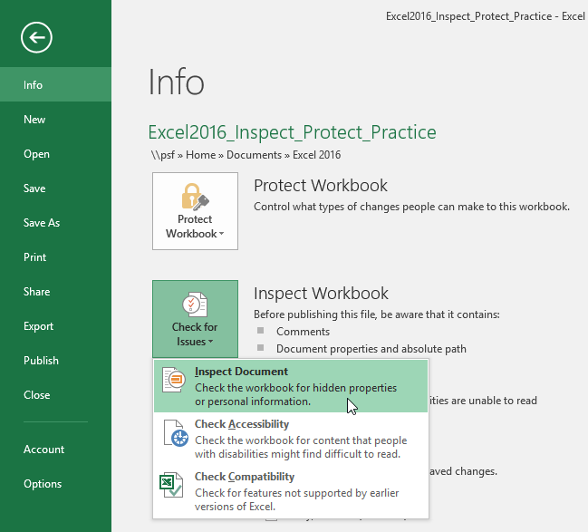
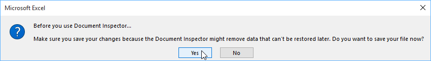
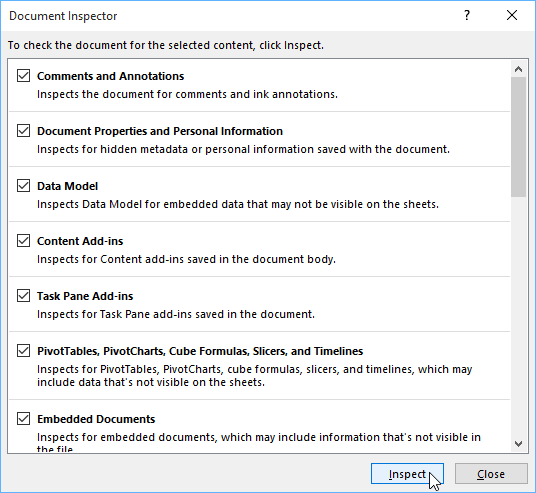
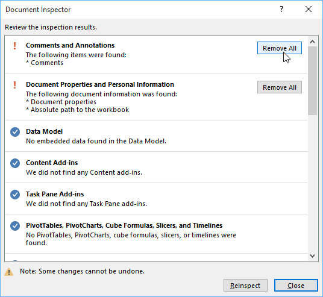
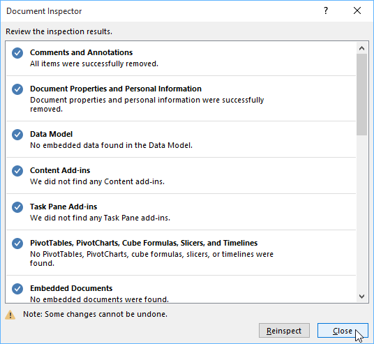
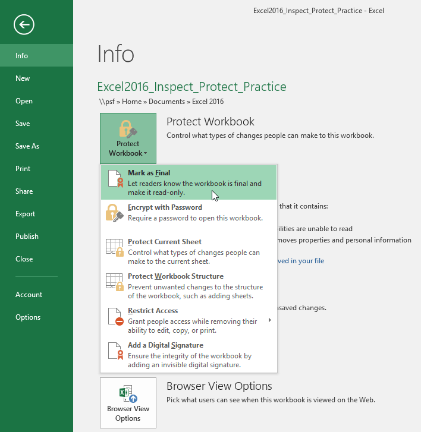
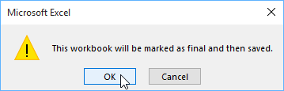
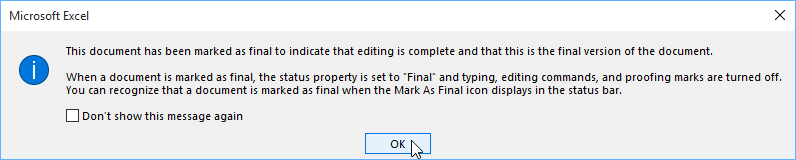
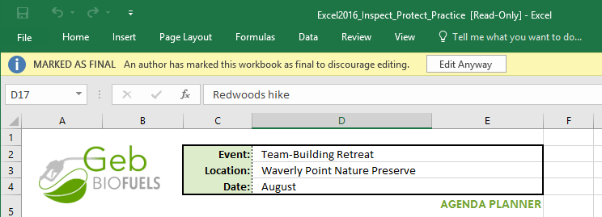

Bài 26: sổ làm việc kiểm tra và bảo vệ
Bài 26: Kiểm tra và bảo vệ Workbook
/en/excel/comments-and-coauthoring/content/
Giới thiệu
Trước khi chia sẻ sổ làm việc, bạn cần đảm bảo rằng sổ làm việc đó không có bất kỳ lỗi chính tả hoặc thông tin nào bạn muốn giữ riêng tư. May mắn thay, Excel có một số công cụ giúphoàn thiệnvàbảo vệsổ làm việc của bạn, bao gồm tính năngTài liệuThanh travàBảo vệ sổ làm việc.
Xem video bên dưới để tìm hiểu thêm về cách kiểm tra và bảo vệ sổ làm việc.
Người kiểm tra tài liệu
Bất cứ khi nào bạn tạo hoặc chỉnh sửa sổ làm việc, một sốthông tin cá nhânnhất định có thể được tự động thêm vào tệp. Bạn có thể sử dụng Trình kiểm tra Tài liệu để xóa thông tin này trước khi chia sẻ sổ làm việc với người khác.
Vì một số thay đổi có thể là vĩnh viễn nên bạn nên lưu bản sao bổ sung của sổ làm việc trước khi sử dụng Trình kiểm tra Tài liệu để xóa thông tin.
Để sử dụng Trình kiểm tra Tài liệu:
- Nhấp vào tabTệpđể truy cậpBackstage view.
- Từ ngănThông tin, hãy nhấp vàoKiểm tra sự cố, sau đó chọnKiểm traTài liệutừ trình đơn thả xuống.

3. Bạn có thể được nhắc lưu tệp của mình trước khi chạyTrình kiểm tra tài liệu.
4. Trình kiểm tra tài liệusẽ xuất hiện. Chọn hoặc bỏ chọn các hộp, tùy thuộc vào nội dung bạn muốn xem lại, sau đó nhấp vàoKiểm tra. Trong ví dụ của chúng tôi, chúng tôi sẽ chọn mọi thứ.
5. kết quảkiểm trasẽ xuất hiện. Trong ví dụ của chúng tôi, chúng tôi có thể thấy rằng sổ làm việc của chúng tôi chứa các nhận xét và một số thông tin cá nhân, vì vậy chúng tôi sẽ nhấp vàoXóa Tất cảtrên cả hai mục để xóa thông tin này khỏi sổ làm việc.
6. Khi bạn hoàn tất, hãy nhấp vàoĐóng.
Bảo vệ sổ làm việc của bạn
Theo mặc định, bất kỳ ai có quyền truy cập vào sổ làm việc của bạn đều có thể mở, sao chép và chỉnh sửa nội dung của nó trừ khi bạnbảo vệnó. Có một số cách để bảo vệ sổ làm việc, tùy thuộc vào nhu cầu của bạn.
Để bảo vệ sổ làm việc của bạn:
- Nhấp vào tabTệpđể truy cậpBackstage view.
- Từ ngănThông tin, hãy nhấp vào lệnhBảo vệ sổ làm việc.
- Trong menu thả xuống, hãy chọn tùy chọn phù hợp nhất với nhu cầu của bạn. Trong ví dụ của chúng tôi, chúng tôi sẽ chọnĐánh dấulà Cuối cùng. Đánh dấu sổ làm việc của bạn là cuối cùng là một cách hay để ngăn cản người khác chỉnh sửa sổ làm việc, trong khi các tùy chọn khác thậm chí còn cung cấp cho bạn nhiều quyền kiểm soát hơn nếu cần.

4. Một hộp thoại sẽ xuất hiện, nhắc bạn lưu. Nhấp vàoOK.
5. Một hộp thoại khác sẽ xuất hiện. Nhấp vàoOK.
6. Sổ làm việc sẽ được đánh dấu là cuối cùng.
Việc đánh dấu sổ làm việc là cuối cùng sẽ không ngăn cản người khác chỉnh sửa sổ làm việc đó. Nếu bạn muốn ngăn mọi người chỉnh sửa nó, thay vào đó bạn có thể sử dụng tùy chọnHạn chế truy cập.
Thử thách!
- Mở sổ làm việc thực hành của chúng tôi.
- Sử dụngTrình kiểm tra tài liệuđể kiểm tra sổ làm việc vàxóamọi thứ nó tìm thấy.
- Bảo vệsổ làm việc bằng cáchĐánh dấu là cuối cùng.
- Khi bạn hoàn tất, sổ làm việc của bạn sẽ trông giống như thế này:

/en/excel/intro-to-pivottables/content/